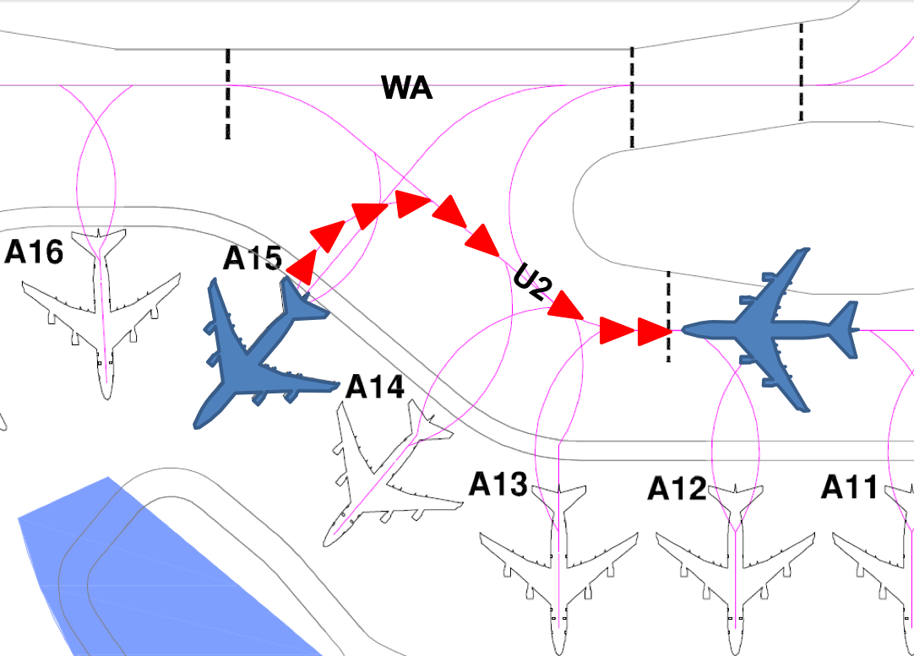

- The aircraft (on idle thrust) shall be pushed onto TWY U2 to face South until the nose of the aircraft is behind the stopbar behind aircraft stand A12.
- The aircraft may breakaway from there.
Phraseology used by Singapore Ground
“Pushback approved, to face South.”